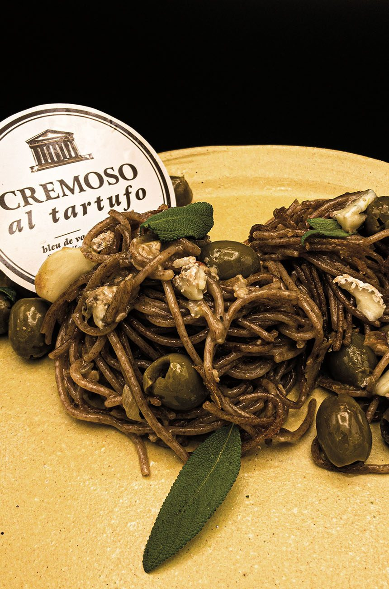

Spaghetti Recipe

Description
Ingridients
- 150 g Cremoso al Tartufo rind
- 600 g wholegrain spelt spaghetti
- Olives
- 1 tomato
- Sage
- 2 cloves of garlic
- Olive oil
- Salt
- 5-peppercorn blend
Steps
- Cook the spaghetti al dente.
- Slice the rind of the Cremoso al Tartufo into thin strips.
- Dice the tomato.
-
Heat the olive oil in a frying pan, add the spaghetti and allow to
colour slightly.
-
Add the Cremoso al Tartufo, olives, diced tomatoes and garlic to the pan
and fry for two minutes with the spaghetti.
- Season with salt and 5-peppercorn blend.
- Add the fresh sage just before serving.
back